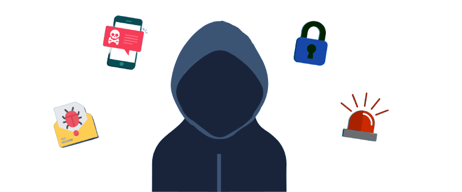

La seguridad, en el más amplio sentido de la palabra, implica capacidad
de predecir. Cuando se estudia la implantación de una red de convergencia capaz de soportar VoIP junto al
resto de las aplicaciones de negocio,
se puede utilizar un enfoque lógico
para definir las capacidades de la red.
En primer lugar, el fraude telefónico, consistente en robar servicios de llamadas de larga distancia, normalmente acompañado de un acceso no autorizado a la línea pública. En segundo lugar, acceso a usuarios y privilegios no autorizados, lo que puede desencadenar diferentes intromisiones, tales como el acceso a los buzones de voz
Los primeros sistemas de voz sobre IP propietarios han logrado proporcionar servicios de voz de calidad, pero no han sido capaces de hacer frente a los nuevos riesgos asociados a redes de convergencia. Esta primera generación de sistemas tampoco ha conseguido abrir los protocolos e interfaces para crear verdaderas redes de convergencia.
Vishing es otra palabra para VoIP Phishing, que involucra a una parte que llama para imitar a una organización confiable (por ejemplo, su banco) y que solicita información confidencial que a menudo crítica.
La utilización de VoIP con softphones y software son vulnerables a gusanos, virus y malware, como cualquier aplicación de Internet. Dado que Dado que estas apli estas aplicaciones de softphone se ejecutan en sistemas de usuario como PC y PDA, están e están expuestas y son vulnerables a ataques de código malicioso en aplicaciones de voz
La manipulación de llamadas es un ataque que implica la manipulación de una llamada telefónica en curso. Por ejemplo, el atacante puede simplemente estropear la calidad de la llamada inyectando paquetes de ruido en el flujo de comunicación. También puede retener la entrega de paquetes para que la comunicación se convierta en irregular y los participantes encuentren largos períodos de períodos de silencio durante la llamada.
VoIP es particularmente vulnerable a los ataques de intermediarios, en los que el atacante intercepta el tráfico de mensajes de señalización de llamada y se hace pasar por la parte que llama, o viceversa. Una vez que el atacante ha ganado esta posicion, puede secuestrar llamadas a través de un servidor de redirección.